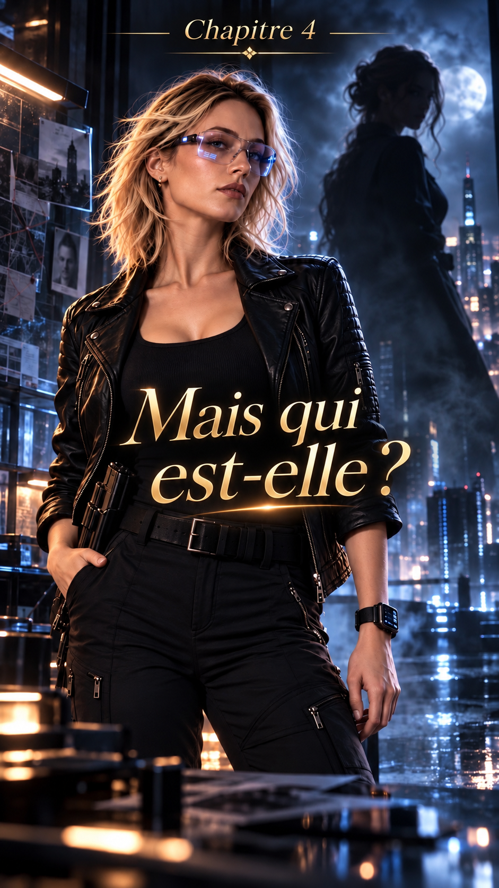
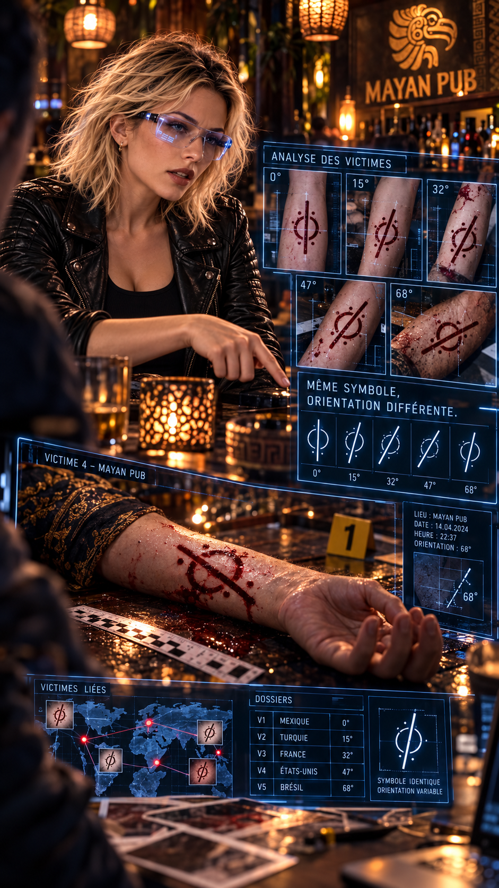
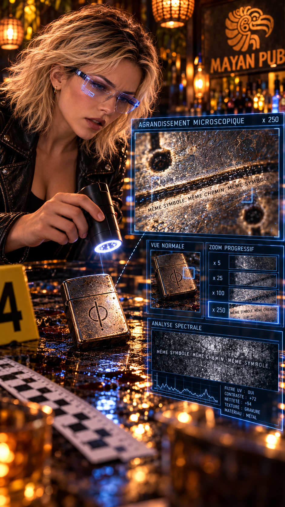
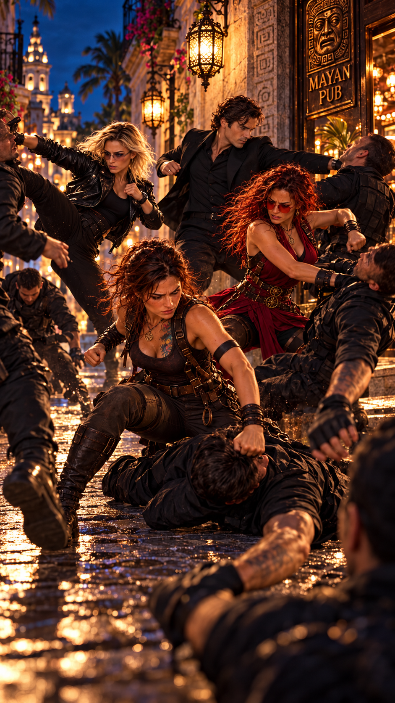
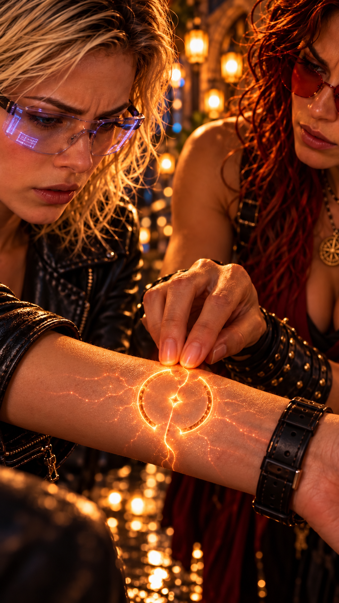
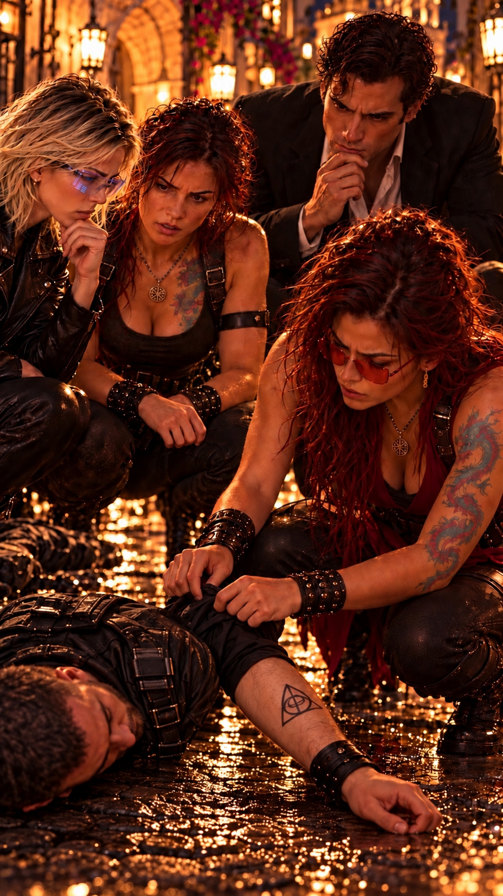

Root n’arrive pas à se débarrasser d’une question.
Sur quoi Lucy travaille-t-elle réellement avec Clive ?
Elle comprend parfaitement pourquoi sa présence au Mexique peut être liée à Betty et à la tentative d’enlèvement d’Anna.
Mais Clive ?
Lucy ne fait jamais rien au hasard.
Et elle sait parfaitement que Clive Lynx est l’un des cambrioleurs les plus recherchés des États-Unis.
Si elle accepte de travailler avec lui, c’est que l’affaire doit être particulièrement complexe.
Peut-être même officieuse.
Root repense également à sa tentative d’intrusion à l’hacienda Awake.
Qu’était-il venu chercher exactement ?
Des informations sur Hope ?
Une faille dans son système de sécurité ?
Ou simplement la preuve qu’elle pouvait représenter un danger pour Anna ?
Pourquoi Clive ?
Elle décide finalement de contacter Lucy.
Un verre.
Tous les trois.
Juste pour discuter.
Et, avec un peu de chance, comprendre ce qu’ils préparent.
Lucy accepte volontiers.
Clive, lui, pose une condition :
Hope doit être présente.
Et il choisit le bar.
Root accepte presque immédiatement, amusée par son attitude.
Lorsqu’elle raconte l’histoire à Hope, celle-ci sourit.
— Il veut m’observer.
— Très certainement.
— Et toi, tu veux les faire parler.
Root prend un air innocent.
— Moi ?
Hope rit.
— Très bien. Je vous rejoindrai vers vingt-deux heures.
— Parfait.
Root consulte son téléphone.
— Rendez-vous au Mayan Pub, près du parc Santa Lucía. Je les retrouve à vingt et une heures.
Elle sourit.
— Ça me laissera le temps de les mettre à l’aise.
Hope secoue la tête.
— Ne vole pas trop vite les secrets du voleur.
Root sourit.
— Aucune promesse.
Root, Lucy et Clive sont installés autour d’une table.
Depuis près d’une heure, ils parlent de tout.
Sauf de ce qui intéresse réellement Root.
Clive raconte plusieurs anecdotes.
Lucy questionne beaucoup Root au sujet de Hope.
Et Root répond juste assez pour ne pas réellement répondre.
— Il y a une chose que je ne comprends pas, finit par dire Lucy.
— Seulement une ?
— Pour l’instant.
Lucy poursuit :
— Comment Hope a-t-elle pu vivre aussi longtemps coupée du monde sans chercher à retrouver son frère ?
Root réfléchit.
— Parce qu’Hope ne pense pas comme nous.
— C’est-à-dire ?
— Elle regarde les événements avec beaucoup plus de distance.
Root cherche ses mots.
— Elle voit parfois des choses que nous ne remarquons qu’après plusieurs heures… ou plusieurs jours.
Clive sourit.
— Un sixième sens ?
Root hausse les épaules.
— Appelez ça comme vous voulez.
Puis elle retourne la conversation.
— Mais parlons plutôt de vous deux.
Lucy sourit.
— Ah.
— Vous n’êtes quand même pas venus jusqu’au Mexique pour prendre des vacances ensemble.
Clive semble presque offensé.
— Pourquoi pas ?
Root le regarde.
— Parce que Lucy ne partirait jamais en vacances avec toi.
— Charmant.
Root poursuit :
— Et surtout parce qu’elle sait exactement qui tu es.
Clive sourit.
— Qui suis-je ?
— Le cambrioleur le plus recherché des États-Unis.
Lucy rit.
Root continue :
— Donc si elle travaille avec toi, ce n’est sûrement pas sur une enquête officielle.
Lucy ne répond pas.
Root sourit.
— J’ai raison.
— Le travail reste le travail.
— Quand c’est officiel, peut-être.
Root se penche légèrement.
— Mais là, ça ne l’est visiblement pas.
Puis elle ajoute :
— Et si Clive peut t’aider, pourquoi pas moi ?
Lucy la regarde.
Root poursuit :
— J’ai des contacts partout dans le monde.
— Je sais.
— Des moyens technologiques assez particuliers.
— Ça aussi, je sais.
— Et quelques compétences utiles.
Clive intervient :
— Ça, j’ai remarqué.
Root sourit.
— Donc je pourrais vous aider.
Lucy hésite.
— IA2 fait l’essentiel du travail de recherche et de corrélation.
Puis elle regarde Clive.
— Et lui apporte une autre façon de voir les choses.
Root acquiesce.
— Justement.
Elle se penche davantage.
— Si ton enquête est aussi compliquée que je le pense, trois cerveaux valent mieux que deux.
Un silence.
Root observe Lucy.
Puis son expression change.
— À moins que…
Lucy la regarde.
— Que quoi ?
— Tu ne me fasses toujours pas confiance.
— Ce n’est pas ça.
— Alors quoi ?
Lucy hésite.
— Je ne veux pas te mettre en danger.
Root la fixe.
Puis prend un air faussement vexé.
— Tu te moques de moi ?
— Root…
— Laisse tomber.
Elle se redresse.
— J’attends Hope et je lui demande de me ramener.
Lucy soupire.
— Ne le prends pas comme ça.
Root ne répond pas.
Lucy finit par céder.
— Nous enquêtons sur la Tueuse Caméléon.
Root se retourne aussitôt.
Clive intervient :
— Plus précisément, Lucy enquête sur la Tueuse Caméléon.
Puis il sourit.
— Moi, je suis simplement le consultant criminel non déclaré.
Lucy lui lance un regard.
Root sourit.
— D’accord.
Le dossier Caméléon
Lucy poursuit :
— L’enquête officielle la considère comme une tueuse en série.
— Et toi non.
— Non.
— Pourquoi ?
Clive répond :
— Parce qu’elle est beaucoup trop propre.
Lucy acquiesce.
— Ses victimes n’ont pas de profil commun.
— Pas de même milieu.
— Pas de même pays.
— Pas de même méthode de mise à mort.
Root comprend.
— Donc pas de rituel personnel classique.
— Exactement.
Lucy poursuit :
— En revanche, quelque chose revient systématiquement.
— Sa signature ?
— Oui.
Root se rapproche.
— Et ça t’a conduit à penser à une tueuse à gages ?
Lucy sourit.
— Pas seulement.
— Alors ?
— Elle me l’a dit elle-même.
Root fronce les sourcils.
— Comment ça ?
— Sur chaque scène de crime, elle a laissé un indice.
Clive ajoute :
— Un indice que personne n’avait remarqué avant Lucy.
Root regarde Lucy.
— Comment tu l’as trouvé ?
Lucy sourit légèrement.
— Observation.
— Intuition.
— Réflexion.
Puis elle ajoute :
— Et peut-être un peu de chance.
Root sourit.
— Ou ton fameux sixième sens.
— Peut-être.
Lucy reprend :
— Sur chaque victime apparaît le même symbole.
— Toujours au même endroit ?
— Presque.
Root fronce les sourcils.
— Presque ?
— Le symbole est identique.
Lucy dessine avec son doigt sur la table.
— Mais son inclinaison change.
Root devient immédiatement attentive.
— Et cette inclinaison indique quelque chose.
Lucy la regarde.
— Voilà pourquoi je t’aime bien.
Root sourit.
Clive lève les yeux.
— Je suis là, au cas où.
Lucy l’ignore.

Observer le symbole
— En prolongeant mentalement l’orientation du symbole…
— Ça pointe vers un endroit précis.
— Exactement.
Lucy poursuit :
— Sur chaque scène, la ligne désignait un objet.
Root semble fascinée.
— Et sur les objets ?
— Un message.
— Visible ?
— Presque pas.
Lucy ajoute :
— Microscopique. Dissimulé sous l’objet ou à l’intérieur.
Root sourit.
— Elle voulait donc qu’on le trouve.
— Oui.
— Mais pas facilement.
— Exactement.
Root réfléchit.
— Elle ne cherche pas seulement à tuer.
— Non.
Lucy poursuit :
— Elle veut être comprise.
Root regarde Clive.
— Et qu’est-ce qu’elle dit ?
Hope arrive précisément à cet instant.
— Bonsoir.
Root tourne la tête.
— Tu arrives au bon moment.
Hope les rejoint.
— Apparemment.
Clive lui adresse un sourire.
— Merci d’avoir accepté mon invitation indirecte.
Hope s’assoit.
— J’étais curieuse de voir pourquoi vous teniez autant à ma présence.
Root répond avant lui :
— Parce qu’ils nous prennent pour des tueuses à gages.
Hope tourne lentement la tête vers Lucy et Clive.
Puis sourit.
— Intéressant.
Clive rit.
Lucy soupire.
Hope poursuit :
— Qu’est-ce qui vous a conduits à cette conclusion ?
Puis elle ajoute :
— Notre franchise ?
— Le cours de self-défense ?
— Ou simplement parce que nous semblons toutes les deux un peu trop difficiles à classer ?
Lucy secoue la tête.
— Très bien.
Elle pose ses mains sur la table.
— Jouons cartes sur table.
Hope sourit.
— Enfin.
Lucy reprend :
— La Tueuse Caméléon laisse un symbole sur chacune de ses victimes.
Elle explique rapidement l’inclinaison variable.
Puis les objets.
Puis les messages.
Hope écoute sans l’interrompre.
— Et que dit le message ? demande-t-elle.
Lucy prend une inspiration.
— Je le connais par cœur.

Message microscopique
« Certains métiers ne deviennent des arts qu’entre des mains d’exception.
Celui-ci appartient à une femme qui sait descendre dans les abysses de l’être humain sans s’y perdre.
Celui qui veut comprendre l’artiste devra accepter de suivre longtemps un chemin sans certitude, guidé seulement par l’espoir fragile d’apercevoir un jour la vérité.
Peut-être alors aura-t-il une chance de comprendre ce qu’il regarde. »
Elle récite :
« Certains métiers ne deviennent des arts qu’entre des mains d’exception. Celui-ci appartient à une femme qui sait descendre dans les abysses de l’être humain sans s’y perdre. Celui qui veut comprendre l’artiste devra accepter de suivre longtemps un chemin sans certitude, guidé seulement par l’espoir fragile d’apercevoir un jour la vérité. Peut-être alors aura-t-il une chance de comprendre ce qu’il regarde. »
Un silence.
Root réfléchit.
— D’accord.
Elle regarde Lucy.
— Je comprends pourquoi tu penses qu’il s’agit d’une femme.
Puis elle ajoute :
— Et elle se définit clairement comme une professionnelle.
Hope intervient :
— Ou elle veut que vous la perceviez ainsi.
Lucy la regarde.
— Vous pensez qu’elle ment ?
— Je pense seulement qu’une personne qui construit un message aussi soigneusement construit aussi l’image qu’elle veut donner d’elle-même.
Clive sourit.
— Je commence à comprendre pourquoi je voulais qu’elle soit là.
Root lui lance un regard.
Lucy poursuit :
— Quoi qu’il en soit, il y a autre chose.
Root sait déjà où elle veut en venir.
— Moi.
Lucy ne répond pas immédiatement.
Root sourit.
— Vas-y.
Lucy soupire.
— IA2 a découvert une corrélation géographique particulièrement troublante.
Hope demande :
— Laquelle ?
Lucy regarde Root.
— Les crimes attribués à la Caméléon sont répartis dans plusieurs pays.
Puis elle ajoute :
— Et pour chaque meurtre que j’ai pu recenser précisément, Root se trouvait dans le même pays.
Root cesse de sourire.
— À la même période ?
— Oui.
— Et parfois dans la même région ?
— Oui.
Root reste silencieuse.
Puis elle souffle :
— D’accord.
Un rire nerveux lui échappe.
— Là, je comprends beaucoup mieux.
Clive ajoute :
— Ça commence à faire beaucoup de coïncidences.
Root réfléchit.
— Et maintenant Hope devient suspecte parce qu’elle est liée à moi.
Lucy répond immédiatement :
— Pas au même niveau.
Hope l’observe.
Lucy poursuit :
— Votre passé est pratiquement inexistant dans les bases de données.
— Donc IA2 ne peut pas vérifier où j’étais.
— Exactement.
Hope acquiesce.
— C’est logique.
Root intervient :
— Mais tu vas devoir rallonger ta liste.
Lucy la regarde.
— Pourquoi ?
— Parce que Peter et Max ont souvent voyagé avec moi.
— Souvent, oui.
Root poursuit :
— Donc si ta corrélation se contente de mes déplacements, tu risques de retrouver leurs noms également.
Lucy sourit.
— Déjà vérifié.
— Et ?
— Ils apparaissent sur certaines périodes.
Root lève les mains.
— Voilà.
Lucy ajoute :
— Mais le message indique une femme.
— Donc il reste Hope et moi.
— Potentiellement.
Clive intervient :
— Sauf qu’IA2 ne peut pratiquement rien exclure concernant Hope.
Root regarde Lucy.
— Et moi, je suis ta suspecte numéro un.
Lucy hésite.
— Ton profil correspond à plusieurs éléments.
— Lesquels ?
Pourquoi Root est-elle suspecte ?
Lucy prend le temps de répondre.
— Tu voyages beaucoup.
— Comme des millions de gens.
— Tu es présente à proximité d’un nombre anormalement élevé de scènes attribuées à la Caméléon.
— Là, d’accord.
— Tu sais te battre à un niveau extrêmement élevé.
— Ça ne fait pas de moi une assassine.
— Non.
Lucy poursuit :
— Tu disposes de ressources financières importantes.
— Encore raté. Je n’ai pas besoin de tuer pour de l’argent.
— Je sais.
— Alors ?
Lucy la regarde.
— Tu recherches les situations extrêmes.
Root ne répond pas.
— Tu prends des risques.
— Oui.
— Tu appartiens désormais officiellement, à mes yeux, à une organisation secrète.
Root sourit sans joie.
— Les Sentinelles de la Lumière.
— Exactement.
Lucy poursuit :
— Et surtout…
Elle hésite.
Root comprend.
— Notre dîner.
— Oui.
Lucy la regarde droit dans les yeux.
— Tu m’as parlé de la façon dont certains événements apparemment insignifiants peuvent provoquer des conséquences majeures.
— Rosa Parks.
— Entre autres.
Lucy poursuit :
— Tu réfléchis en permanence en termes de causes, de conséquences, de trajectoires humaines.
Root comprend parfaitement.
— Donc, dans l’hypothèse où quelqu’un voudrait supprimer une personne pour modifier une chaîne d’événements futurs…
Lucy ne répond pas.
Root termine elle-même :
— Je pourrais correspondre.
— Oui.
Un silence.
Puis Root sourit légèrement.
— Tu sais ce qui est inquiétant ?
— Quoi ?
— Je trouve ton raisonnement plutôt bon.
Clive rit.
Root poursuit :
— Mais il y a un problème.
Lucy attend.
— Ton suspect est beaucoup trop parfait.
Lucy sourit.
— C’est exactement ce qui me dérange.
Root la regarde.
— Donc je reste ta suspecte numéro un.
Lucy hésite une fraction de seconde.
— Disons…
Root arque un sourcil.
— Lucy.
Lucy soupire.
— Oui.
Root se renverse dans son fauteuil.
— Génial.
Puis elle lève son verre.
— À la confiance.
Le suspect parfait
Hope reste silencieuse quelques secondes.
Puis elle regarde Lucy.
— Ton raisonnement est parfaitement plausible.
Lucy attend la suite.
— Mais tu commets une erreur.
— Laquelle ?
— Tu regardes exactement dans la direction que la Caméléon veut que tu regardes.
Root relève légèrement les yeux.
Hope poursuit :
— Au début de son message, elle peut effectivement faire penser à Root.
Elle compte presque les mots.
— « Art d’exception. Femme aguerrie. L’être qui sait. »
Root grimace.
— Merci.
— Mais ensuite, elle change de cible.
Lucy fronce les sourcils.
— Comment ça ?
Hope reprend lentement :
— « Un fragile espoir. Une persistance vaine. Être guidé sur le chemin de la vérité… »
Elle regarde Lucy.
— Là, elle ne parle plus d’elle.
— Elle parle de l’enquêteur.
Lucy ne répond pas.
Hope poursuit :
— De toi.
Clive cesse de sourire.
— Elle te dit presque ouvertement que tu vas persister.
— Que tu vas croire progresser.
— Et que cette persistance peut être vaine si tu continues à suivre uniquement le chemin qu’elle a préparé.
Lucy relit mentalement le message.
— Une fausse piste.
— Peut-être.
Hope nuance immédiatement :
— Ou une vraie piste construite pour conduire à une fausse conclusion.
Root sourit légèrement.
— C’est encore plus élégant.
Lucy la regarde.
— Pas quand c’est toi la conclusion.
Hope poursuit :
— Il y a surtout une autre partie qui m’intéresse.
— Laquelle ?
— « Approcher ou percevoir miraculeusement l’artiste. »
Hope marque une pause.
— Pourquoi « miraculeusement » ?
Clive réfléchit.
Lucy comprend progressivement.
— Parce qu’elle estime qu’on ne peut pas normalement la trouver.
Hope acquiesce.
— Exactement.
Puis elle ajoute :
— Ton Caméléon est peut-être un fantôme administratif.
Lucy se fige.
Hope poursuit :
— Quelqu’un qui n’apparaît pas dans les bases ordinaires.
— Pas d’identité exploitable.
— Pas de parcours permettant à IA2 de créer les corrélations habituelles.
Elle sourit légèrement.
— Un peu comme moi avant que je décide de réapparaître officiellement.
Lucy réfléchit.
— Donc quand elle parle d’un « espoir fou »…
— Elle te nargue peut-être.
Hope poursuit :
— Elle sait que tes outils sont extraordinaires.
— Mais elle sait aussi exactement ce qu’ils ne peuvent pas voir.
Clive siffle doucement.
— J’aime de moins en moins cette femme.
Décrypter le message
Hope regarde Lucy.
— Elle a pourtant déjà commis des erreurs.
Lucy se redresse immédiatement.
— Lesquelles ?
Root intervient.
— La première, c’est moi.
Lucy tourne les yeux vers elle.
— Pourquoi te mettre sur ma piste ?
Root poursuit :
— Si elle voulait seulement rester invisible, elle aurait pu ne rien laisser.
— Pourtant elle t’a donné un chemin.
Clive acquiesce.
— Donc soit elle veut jouer…
— soit elle veut faire croire quelque chose, termine Lucy.
Root continue :
— Et surtout, quelqu’un comme elle ne travaille peut-être pas uniquement pour l’argent.
Elle réfléchit.
— Elle peut travailler seule.
— Pour une organisation.
— Pour un groupe.
Puis son expression devient plus sérieuse.
— Ou pour un ordre.
Hope ne réagit pas.
Lucy le remarque.
Root poursuit :
— Et il y a autre chose que nous ne regardons probablement pas assez.
— Les victimes.
— Exactement.
Root se rapproche de la table.
— Pourquoi ces personnes ?
— Pourquoi elles, précisément ?
— Qu’est-ce qui a changé après leur mort ?
Clive comprend.
— Tu veux chercher les conséquences plutôt que le mobile immédiat.
— Les deux.
Root sourit.
— Peter dirait qu’un effet possède toujours une cause.
Elle réfléchit.
— Trouve la cause qui rend ces morts nécessaires et tu comprendras peut-être qui commande la Caméléon.
Hope intervient :
— Je pousserais même un peu plus loin.
Tout le monde se tourne vers elle.
— IA2 ne devrait pas seulement étudier les effets de leurs morts.
— Mais quoi ?
— Leur absence.
Lucy fronce les sourcils.
Hope poursuit :
— Prenez chacune des victimes.
— Puis posez cette question :
— Que se serait-il passé si cette personne était encore vivante aujourd’hui ?
Lucy ne bouge plus.
Clive la regarde.
Root sourit.
Lucy finit par murmurer :
— Bon sang…
Reconstruire les futurs possibles
Hope continue :
— Quelle décision aurait-elle pu prendre ?
— Qui aurait-elle pu rencontrer ?
— Quel contrat aurait-elle pu empêcher ?
— Quelle découverte aurait-elle pu faire ?
— Quelle personne aurait-elle pu sauver… ou condamner ?
Lucy attrape son téléphone.
— C’est ça.
Elle regarde Hope.
— Tu viens de gagner ta place dans l’équipe.
Hope sourit.
— Ça veut dire que Root et moi ne sommes plus suspectes ?
Lucy range son téléphone.
— Je n’ai pas dit ça.
Hope éclate de rire.
— J’aurai essayé.
Clive intervient :
— Donc, si je résume…
Il désigne Root et Lucy.
— Vous deux, vous continuez à travailler sur la piste que la Caméléon nous donne.
Puis il se désigne.
— Moi, je cherche les gens qui n’existent pas.
Lucy sourit.
— Les identités effacées.
— Les disparus.
— Les morts qui ne le sont peut-être pas.
Clive acquiesce avec satisfaction.
— Mon terrain préféré.
Lucy poursuit :
— IA2 va reconstruire chaque victime comme si elle avait survécu.
— Décisions probables, réseaux, projets, conséquences.
Hope ajoute :
— Et surtout les points où leur avenir aurait pu modifier celui de quelqu’un d’autre.
Lucy acquiesce.
— Et toi ?
Elle regarde Hope.
Hope sourit.
— Moi, j’essaierai de regarder là où votre Caméléon espère que personne ne regarde.
Root lève son verre.
— Voilà une équipe parfaitement normale.
Répartir l’enquête
Soudain, Hope cesse de sourire.
Son regard change.
Root le remarque immédiatement.
— Qu’est-ce qu’il y a ?
Hope ne répond pas.
Elle observe autour d’elle.
Le bar.
Les tables.
Les entrées.
Les passants.
Puis elle se lève.
— Il y a trop de monde ici.
Lucy fronce les sourcils.
— Et ?
— On part.
— Pourquoi ?
Hope saisit sa veste.
— Maintenant.
Root ne pose aucune question.
— Allez.
Clive comprend que quelque chose a changé.
Les quatre quittent rapidement le pub.
Qu’est-ce que Hope a remarqué ?
À peine ont-ils parcouru quelques mètres que Lucy demande :
— Quelqu’un pourrait m’expliquer…
— Attention ! lance Root.
Elle attrape Lucy par le bras et la tire violemment vers elle.
Au même instant, un homme surgit dans son dos.
Hope projette Clive contre un mur.
— Hé !
Une lame passe précisément à l’endroit où se trouvait sa gorge une fraction de seconde auparavant.
— D’accord, retire ce que j’allais dire.
Six individus apparaissent presque simultanément.
L’affrontement éclate.

Root et Hope réagissent immédiatement.
Lucy tente de participer, mais comprend très vite que leurs adversaires ne sont pas de simples agresseurs de rue.
Ils se déplacent en coordination.
Sans paroles inutiles.
Chaque attaque en prépare une autre.
Root neutralise un premier homme.
Hope en désarme un second.
Clive évite de justesse un coup et récupère l’arme abandonnée sans même réfléchir.
— Je vous rappelle que moi, normalement, je vole des tableaux !
Lucy esquive une attaque.
— Adapte-toi !
Quelques instants plus tard, les six assaillants sont au sol.
Vivants.
Mais incapables de poursuivre le combat.
Hope s’accroupit auprès du premier.
Elle saisit son poignet droit.
Rien.
Puis le deuxième.
Le troisième.
Au quatrième, son expression change.
Root le remarque.
— Hope ?
Elle passe au suivant.
Puis au dernier.
Cette fois, elle ne cache plus son inquiétude.
Root s’approche.
— Qu’est-ce qu’il y a ?
Hope se redresse.
— Ce ne sont pas des mercenaires.
Lucy reprend son souffle.
— Alors quoi ?
Hope regarde Root.
— Des Gardiens Noirs.
Le sourire de Root disparaît.
Lucy regarde les hommes.
Puis Hope.
— Les fameux Gardiens Noirs ?
Observer leur façon de combattre
Hope ne répond pas immédiatement.
Elle fixe Root.
— Dis-moi quelque chose.
— Quoi ?
— Lorsque tu étais au Vietnam…
Root attend.
— À part ce que je t’avais demandé de retrouver…
Hope choisit soigneusement ses mots.
— Tu n’aurais rien découvert d’autre ?
Root hésite.
Hope ferme les yeux.
— Root…
— Si.
— Quoi ?
— Une sorte de lame.
Hope rouvre les yeux.
— Une lame ?
— Enfin…
Root réfléchit.
— Elle ressemble davantage à une clé qu’à un couteau.
L’expression de Hope devient beaucoup plus grave.
— Où est-elle ?
— En sécurité.
— Où ?
Root lui adresse un regard.
— Là où tu sais.
Hope semble légèrement rassurée.
— Et personne ne sait que tu l’as trouvé?
— Personne.
Puis Root hésite.
— Enfin… personne à qui je l’ai dit.
Hope regarde les hommes au sol.
— Alors quelqu’un t’a suivie suffisamment longtemps pour comprendre que tu avais découvert quelque chose.
Root murmure :
— Qu’est-ce que cette clé ouvre ?
Hope regarde la rue.
Puis les hommes.
— Si c’est bien ce que je pense…
Elle marque une pause.
— Quelque chose que les Gardiens Noirs ne doivent surtout pas ouvrir.
Lucy soupire.
— J’adore vos réponses.
— C’est-à-dire ?
— Elles répondent toujours à une question en en créant dix nouvelles.
Clive acquiesce.
— Là-dessus, elle n’a pas tort.
Hope regarde Root.
— Nous devons rentrer.
Root acquiesce.
Reconstituer la piste de la clé
Puis Hope aperçoit quelque chose sur le poignet de Lucy.
Son regard se fixe.
Lucy le remarque.
— Quoi ?
Hope ne répond pas.
Elle s’approche.
— Donne-moi ton bras.
Lucy recule instinctivement.
— Certainement pas.
— Lucy.
— Pourquoi ?
Hope regarde Root.
Cette fois, son expression est différente.
Plus troublée que véritablement inquiète.
— Parce que je crois que je viens de comprendre quelque chose.
Lucy fronce les sourcils.
— À propos de quoi ?
Hope tend doucement la main.
— De toi.
Lucy hésite.
Puis, contrairement à son instinct habituel, elle lui tend finalement son bras.
Hope saisit délicatement son poignet droit.
— Ça ne fera pas mal.
— Je commence à détester cette phrase.
Hope pose deux doigts contre l’intérieur de son poignet.
Quelques secondes passent.

La marque de Lucy
Puis quelque chose apparaît sous la peau de Lucy.
Une ligne.
Puis une seconde.
Des symboles se dessinent lentement.
Root reste figée.
— Impossible…
Lucy observe son propre poignet.
La marque continue à apparaître.
Elle est différente de celle de Root.
Différente également de celles des Sentinelles qu’elle a déjà aperçues.
Mais tout aussi complexe.
Tout aussi ancienne.
Un cercle incomplet semble se diviser en deux chemins qui ne se rejoignent jamais complètement.
Au centre, une fine lumière hésite entre deux directions.
Lucy ne trouve plus ses mots.
— Qu’est-ce que…
Elle regarde Hope.
— Comment tu as fait ça ?
Hope ne répond pas.
Lucy regarde à nouveau son poignet.
— Je n’ai jamais eu de tatouage.
— Ce n’en est pas un.
Root semble presque aussi bouleversée qu’elle.
Hope retire lentement sa main.
La marque reste visible quelques instants.
Puis commence à s’effacer.
Lucy relève les yeux.
— Qu’est-ce que ça signifie ?
Hope regarde Root.
Puis Lucy.
Elle hésite.
Ce qui, venant d’elle, inquiète encore davantage Lucy.
— Hope ?
Hope finit par répondre :
— Ça signifie que notre rencontre n’est probablement pas aussi fortuite que je l’espérais.
Lucy se raidit.
— Ce n’est toujours pas une réponse.
— Non.
Hope la regarde droit dans les yeux.
— Mais celle que tu demandes mérite mieux qu’une explication donnée au milieu d’une rue avec six Gardiens Noirs inconscients à nos pieds.
Clive lève une main.
— Pour une fois, je vote avec Hope.
Lucy ne quitte pas Hope des yeux.
— Tu sais ce que c’est.
— Oui.
— Root aussi ?
Root répond honnêtement :
— Je crois savoir.
Lucy réfléchit.
— Et moi ?
Hope secoue doucement la tête.
— Toi, tu viens seulement de découvrir que tu possèdes une question dont tu ignorais l’existence.
Lucy regarde encore son poignet.
La marque disparaît lentement sous sa peau.
— Alors ? demande-t-elle. Je suis quoi ?
Hope hésite.
Root le remarque immédiatement.
— Hope ?
Hope regarde Lucy.
— Certaines choses doivent être découvertes, pas simplement dévoilées.
Lucy soupire.
— Évidemment.
— Je suis sérieuse.
Hope poursuit :
— Ce que cette marque signifie concerne ton histoire. Peut-être même celle de ta famille. Ce n’est pas à moi de décider à ta place ce que tu dois en faire.
Lucy secoue la tête.
— Tu pourrais au moins me donner un début.
Hope réfléchit.
— Très bien.
Elle désigne son poignet.
— Cette marque signifie que tu n’es pas extérieure à tout ce que je viens de te raconter.
Lucy reste silencieuse.
— Mais elle ne fait pas de toi une Sentinelle de la Lumière.
Root ajoute doucement :
— Ni une Gardienne Noire.
Lucy regarde successivement les deux femmes.
— Donc il existe encore autre chose.
Hope acquiesce.
— Oui.
— Et ça s’appelle comment ?
Un nouveau silence.
Hope finit par répondre :
— Les Indécis.
Lucy éclate presque de rire.
— Vous êtes sérieuses ?
— Complètement.
— Et évidemment, je suis une « Indécise ».
— Tu portes leur marque.
Que signifie être une Indécise ?
Lucy observe une nouvelle fois son poignet.
— Qu’est-ce que ça signifie ?
Hope choisit soigneusement ses mots.
— Que ton chemin n’est lié par naissance à aucun des deux ordres.
— Donc je dois choisir un camp ?
— Non.
Hope insiste :
— Tu peux ne jamais en choisir.
— Tu peux leur faire confiance.
— Les combattre tous les deux.
— Ou suivre ton propre chemin.
Lucy fronce les sourcils.
— Alors pourquoi « Indécis » ?
Root sourit.
— Parce que les gens aiment mettre des noms sur ce qu’ils ne peuvent pas prévoir.
Cette réponse semble davantage plaire à Lucy.
Hope reprend :
— Tout ce qui t’entoure influence tes décisions : les personnes que tu rencontres, ce que tu apprends, ce que tu ignores, ce que tu crains, ce que tu aimes.
Elle marque une pause.
— Mais influencer n’est pas décider.
Lucy écoute.
— C’est là toute la différence.
Hope poursuit :
— Certains voudront probablement te convaincre que ton chemin est déjà écrit.
— Moi, je pense que le destin place parfois des croisements devant nous.
— Mais c’est encore nous qui choisissons dans quelle direction marcher.
Lucy regarde Root.
— C’est donc ça, votre obsession du destin.
Root sourit.
— Entre autres.
Hope ajoute :
— Et ne sous-estime jamais ce que tu ignores.
Lucy arque un sourcil.
— Pourquoi ?
— Parce que nous prenons tous nos décisions avec ce que nous savons au moment où nous les prenons.
Elle regarde son poignet.
— Il y a dix minutes, cette marque n’existait pas dans ta réalité.
Lucy corrige immédiatement :
— Elle existait.
Hope sourit.
— Exactement.
— Je l’ignorais simplement.
— Et maintenant que tu le sais, tes prochains choix ne seront plus exactement les mêmes.
Lucy reste silencieuse.
Cette fois, l’idée semble réellement l’atteindre.
Puis elle regarde les six hommes étendus au sol.
— Très bien.
Elle reprend brusquement son ton d’enquêtrice.
— Maintenant que nous avons terminé la séance de philosophie existentielle…
Clive sourit.
— Je la reconnais.
Lucy désigne les hommes.
— Qu’est-ce qu’on fait d’eux ?
Hope regarde autour d’elle.
— Rien.
— Pardon ?
— Nous partons.
Lucy reste stupéfaite.
— Six hommes viennent de nous attaquer et tu veux simplement partir ?
— Oui.
— Je suis flic, Hope.
— Justement.
Hope s’accroupit auprès de l’un des agresseurs.
— Regarde-les.
Lucy s’approche.
— Quoi ?
— Aucun document.
— Ça arrive.
— Aucun téléphone.
— Toujours possible.
— Aucun objet personnel.
Lucy commence à comprendre.
Hope poursuit :
— Et ils sont venus en équipe parfaitement coordonnée, sans parler, sans hésiter, en sachant exactement qui attaquer.
Lucy se tourne vers Clive.
— Photos.
— Déjà fait.
Il montre son téléphone.
— Empreintes ?
— Je peux essayer.
Lucy s’accroupit.
Quelques minutes plus tard, elle transmet les premiers éléments à IA2.
Hope se relève.
— Nous ne devrions plus rester ici.
Lucy ne quitte pas son écran.
— Une minute.
IA2 commence à renvoyer plusieurs correspondances.
Lucy cesse soudain de respirer.
— Non…
Clive se rapproche.
— Quoi ?
Lucy ouvre le premier dossier.
Décédé.
Puis le deuxième.
Décédé.
Un troisième.
Encore.
Elle regarde l’homme inconscient à quelques mètres d’elle.
Puis son écran.
— Ça n’a aucun sens.
Hope ne semble pas surprise.
Lucy vérifie les données.
— Celui-là est officiellement mort il y a six ans.
Elle regarde un autre homme.
— Celui-ci il y a presque neuf ans.
Clive cesse complètement de plaisanter.
— Morts comment ?
Lucy parcourt les informations.
— Accidents.
Elle ouvre un autre dossier.
— Accident de voiture.
Puis un autre.
— Noyade.
Un autre.
— Chute.
Root regarde Hope.
Lucy dit brutalement, un peu énervé :
— Ils étaient pourtant parfaitement vivants lorsqu’ils ont essayé de nous découper il y a cinq minutes.
Hope acquiesce.
— Je n’ai pas dit qu’ils étaient morts.
— C’est exactement ce qu’indique IA2.
— Non.
Hope secoue la tête.
— IA2 t’indique qu’ils sont officiellement morts.
Lucy comprend la différence.
— Donc leurs morts ont été falsifiées.
— Ou leurs identités ont été effacées.
Clive ajoute :
— Pour le monde administratif, ces types n’existent plus.
Hope acquiesce.
— Voilà.
Dossiers IA2
Lucy regarde encore les dossiers.
— Et tu savais ça ?
— Je savais que les Gardiens Noirs utilisent des personnes qui ont abandonné leur ancienne existence.
— Ça ne signifie pas nécessairement qu’ils simulent tous leur mort.
— Non.
Hope regarde les six hommes.
— Mais visiblement, certains le font.
Lucy se relève.
— Et maintenant ?
— Maintenant nous partons avant que d’autres viennent les récupérer.
— Tu es certaine qu’ils vont venir ?
— Oui.
— Comment ?
Hope sourit légèrement.
— Parce que si six membres de ton organisation secrète disparaissaient soudainement, tu ne les abandonnerais pas sur un trottoir.
Clive acquiesce.
— Argument raisonnable.
Lucy hésite encore.
Puis range finalement son téléphone.
— Très bien.
— On bouge.
Les quatre commencent à s’éloigner.
Lucy marche à côté de Hope.
— J’ai encore besoin d’une explication.
Hope soupire.
— Quelle surprise.
— Tu m’as parlé des Sentinelles, des Gardiens Noirs et maintenant des Indécis.
Elle compte sur ses doigts.
— Donne-moi au moins la version courte.
Hope réfléchit.
— La version très courte ?
— Très courte.
— Les Sentinelles de la Lumière et les Gardiens Noirs sont deux organisations anciennes.
Lucy attend.
— Elles possèdent des visions radicalement différentes de ce que devrait devenir l’humanité et de la manière dont certaines connaissances doivent être utilisées.
— Et elles contrôlent le monde.
Hope secoue immédiatement la tête.
— Non.
— Pourtant vous influencez des événements.
— Influencer n’est pas contrôler.
Hope poursuit :
— Aucun des deux ordres ne maîtrise le monde. Heureusement.
— Mais ils interviennent.
— Parfois.
— Ils manipulent.
Hope hésite.
— Parfois aussi.
Lucy relève immédiatement ce mot.
— Même les Sentinelles ?
Hope la regarde droit dans les yeux.
— Je t’avais promis de ne pas mentir.
Lucy apprécie la réponse malgré elle.
— Donc vos gentils Sentinelles ne sont pas toujours si gentils.
— Je n’ai jamais dit que nous étions les gentils.
Root regarde Hope.
Lucy reste silencieuse.
Hope poursuit :
— Les Sentinelles prétendent préserver un équilibre et protéger certaines connaissances.
— Les Gardiens Noirs cherchent généralement à rompre cet équilibre pour accroître leur pouvoir.
— Mais réduire tout cela à « bien contre mal » serait beaucoup trop simple.
Lucy réfléchit.
— Et les Indécis ?
Hope la regarde.
— Ils n’appartiennent naturellement à aucun des deux.
— Donc les deux camps essaient de les récupérer.
— Parfois.
Lucy comprend soudain.
— Et moi ?
Hope ne répond pas.
— Hope.
— Je pense que tu viens de devenir beaucoup plus intéressante aux yeux de certaines personnes.
Lucy grimace.
— Formidable.
Clive intervient :
— Je te l’avais dit. Les vacances au Mexique étaient une excellente idée.
Lucy lui lance un regard.
Comprendre les trois positions
Après quelques mètres, Lucy revient à son enquête.
— Et la Caméléon dans tout ça ?
Hope ne répond pas immédiatement.
— Tu as une idée, n’est-ce pas ?
— Une hypothèse.
— Laquelle ?
Hope regarde Root.
Puis Lucy.
— Je connais quelqu’un qui pourrait correspondre à plusieurs éléments que tu m’as décrits.
Lucy s’immobilise.
— Qui ?
Hope hésite.
— Je vais d’abord effectuer quelques vérifications avant de te donner une tête à scalper.
Root ne dit rien.
Clive regarde Hope.
— C’est compréhensible.
Lucy, elle, devient immédiatement beaucoup plus attentive.
— Donne-moi au moins un nom.
— Pas maintenant.
— Hope…
— Parce que je ne sais pas encore si c’est elle.
Lucy soupire.
— Alors qu’est-ce qui correspond ?
Hope réfléchit.
— Une femme.
— Extrêmement bien entraînée.
— Capable de disparaître pendant des périodes entières.
— Très intelligente.
— Patiente.
Elle marque une pause.
— Et suffisamment sûre d’elle pour transformer une traque en jeu.
Lucy sent plusieurs éléments s’aligner dans son esprit.
— Une tueuse professionnelle ?
Hope la regarde.
— Disons que oui.
Un silence.
Lucy demande :
— Elle travaille pour les Gardiens Noirs ?
— Oui.
Lucy sort presque son téléphone.
Hope l’arrête immédiatement.
— Ne fais pas de raccourci.
— Pourquoi ?
— Parce que tout ce que je viens de te dire correspond à un profil.
Elle la regarde droit dans les yeux.
— Pas à une preuve.
Lucy reste silencieuse.
Elle sait que Hope a raison.
Hope ajoute :
— Et si cette personne est réellement ta Caméléon, alors il faut comprendre pourquoi elle veut autant que tu la recherches.
Lucy repense immédiatement au message.
Le fragile espoir.
La persistance.
Approcher l’artiste.
— Tu penses qu’elle sait qui je suis.
— Je pense que c’est une possibilité.
— À cause de ma marque ?
Hope hésite.
— Peut-être.
Lucy n’aime pas du tout cette réponse.
— Et pourquoi voudrait-elle que je la trouve ?
Hope regarde son poignet.
— Ça…
Elle marque une pause.
— C’est probablement beaucoup plus important que son identité.
Lucy marche quelques secondes en silence.
Puis elle ralentit.
— Attends.
Tout le monde se tourne vers elle.
— On est en train de supposer que la Caméléon tue pour les Gardiens Noirs.
— Oui, répond Hope.
— Et donc que ses victimes ont un rapport avec les Sentinelles.
— Peut-être.
Lucy réfléchit.
— Mais les victimes que j’ai identifiées sont ordinaires.
— Pas de politiciens.
— Pas de milliardaires.
— Pas de militaires haut placés.
Elle secoue la tête.
— Certaines sont même parfaitement insignifiantes d’un point de vue géopolitique.
Hope sourit légèrement.
— « Insignifiantes » selon quoi ?
Lucy la regarde.
— Selon leur influence.
— Leur influence visible.
Lucy comprend la nuance.
Hope poursuit :
— Souviens-toi de ce que nous disions tout à l’heure.
— Ne demande pas seulement ce que leur mort a changé.
— Demande ce que leur vie aurait pu changer.
Lucy reste silencieuse.
Root intervient :
— Un professeur inconnu peut changer la vie d’un futur président.
Clive ajoute :
— Un technicien peut être le seul à remarquer une anomalie.
Hope poursuit :
— Une infirmière peut sauver quelqu’un qui, dix ans plus tard, changera le destin de milliers de personnes.
Lucy secoue lentement la tête.
— L’effet papillon.
— Exactement.
— Et tu penses que quelqu’un choisit les personnes qu’il faut supprimer avant qu’elles produisent certains effets.
Hope répond immédiatement :
— Je pense seulement que ça mérite d’être vérifié.
Lucy la regarde longuement.
— Là, tu apprends vite.
Hope sourit.
— J’avais un bon professeur ce soir.
Lucy sort son téléphone.
— IA2 va avoir du travail.
Clive soupire.
— Et moi aussi, j’imagine.
— Beaucoup.
Lucy poursuit :
— On reprend chaque victime.
— Entourage.
— Projets.
— Rencontres interrompues.
— Décisions qu’elle n’a jamais pu prendre.
— Personnes qu’elle aurait probablement croisées.
Root acquiesce.
— Là, nous commencerons peut-être à voir le dessin derrière les points.
Lucy regarde Hope.
— Et si ta. Suspecte apparaît quelque part dans ce dessin ?
Hope devient sérieuse.
— Alors nous aurons une vraie piste.
Lucy range son téléphone.
— Pas une certitude.
Hope sourit.
— Exactement.
Lucy lui rend son sourire.
— Finalement, tu apprends aussi à parler comme une flic.
— Ne m’insulte pas.
Clive éclate de rire.
Lucy regarde une dernière fois derrière elle.
Les six hommes sont toujours au sol.
Puis son regard revient vers Hope.
— Je te préviens.
— Quoi ?
— Si cette histoire de Sentinelles, de Gardiens et d’Indécis est une gigantesque mise en scène…
Hope sourit.
— Tu vas m’arrêter ?
— Personnellement.
— Marché conclu.
Lucy reprend sa marche.
Mais elle ne peut s’empêcher de regarder son poignet.
Elle ne voit plus rien.
Et pourtant, pour la première fois, elle sait que quelque chose s’y cache.
Quelque chose que ni IA2, ni ses dossiers, ni toutes ses années d’enquête n’avaient jamais découvert.
Et cette fois, la question n’était plus seulement :
Mais qui est la Caméléon ?
Il y en avait désormais une autre.
Beaucoup plus personnelle.
Pourquoi la Caméléon chercherait-elle Lucy Adverse ?
Root reprend doucement :
— Comme Rosa Parks avant son simple « non ».
Lucy tourne les yeux vers elle.
Root poursuit :
— Une personne n’a pas besoin d’être riche, célèbre ou puissante pour provoquer des conséquences immenses.
Hope acquiesce.
— C’est exactement ce que j’essaie de te faire comprendre.
Elle regarde Lucy.
— Je sais que tout cela est difficile à accepter pour toi. Tu es pragmatique. Tu travailles avec des faits, des preuves, des éléments vérifiables.
— Oui.
— Alors vérifie.
Hope sourit légèrement.
— Qu’est-ce que ça te coûte ?
— Du temps.
— Exactement.
Elle poursuit :
— Reprends tes victimes autrement.
— Ne regarde pas seulement ce qu’elles étaient.
— Regarde ce qu’elles représentaient pour les autres.
Lucy écoute.
— Certaines n’étaient ni riches ni connues.
— Pourtant, elles étaient écoutées.
— Elles avaient de l’influence sur un groupe, une communauté, une entreprise, une famille, parfois beaucoup plus.
Hope insiste :
— Quelqu’un peut bouleverser l’histoire sans jamais apparaître dans un livre d’histoire.
Root ajoute :
— Un professeur.
— Un scientifique.
— Un médecin.
— Un militant local.
— Un journaliste inconnu.
— Une personne qui convainc simplement quelqu’un d’autre au bon moment.
Lucy réfléchit.
Hope poursuit :
— Tu cherches peut-être des victimes importantes selon les critères habituels.
— Alors qu’il faudrait chercher des personnes importantes par leurs conséquences potentielles.
Lucy secoue lentement la tête.
— Et tu voudrais me faire croire que vos deux ordres choisissent ce genre de personnes pour faire basculer l’histoire ?
Hope rectifie immédiatement :
— Non.
— Je te demande seulement d’envisager que certaines organisations puissent essayer d’influencer des événements.
Lucy arque un sourcil.
— Comme les gouvernements, les services secrets, les multinationales, les groupes criminels…
— Exactement.
Hope poursuit :
— Sauf que les nôtres existent depuis beaucoup plus longtemps.
Lucy la fixe.
— Et vous voulez me faire croire que derrière toutes les catastrophes historiques se cachent vos deux groupes ?
— Certainement pas.
Hope secoue la tête.
— Ce serait absurde.
Elle ajoute :
— Les guerres, les révolutions, les crises et les progrès naissent de milliers de causes humaines.
— Mais certaines personnes essaient parfois d’accélérer une évolution.
— D’en ralentir une autre.
— Ou de profiter d’un moment favorable.
Lucy reste silencieuse.
Hope poursuit :
— Nous ne contrôlons pas l’humanité comme des marionnettistes.
— Nous l’influençons parfois.
— Et les Gardiens Noirs aussi.
Root intervient :
— Voilà pourquoi les conséquences sont essentielles.
— Si ta Caméléon élimine certaines personnes, il faut découvrir ce que leur absence permet.
Lucy soupire.
— Très bien.
Puis elle désigne les six hommes étendus au sol.
— Mais pour l’instant, j’ai surtout six types qui ont essayé de nous tuer et que vous prétendez appartenir à un ordre secret.
Hope la regarde.
— Tu veux une preuve ?
Lucy ne répond pas immédiatement.
Puis :
— Oui.

Preuve des Gardiens Noirs
Hope s’accroupit auprès de l’un des hommes inconscients.
Elle remonte doucement la manche de son bras droit.
Puis pose sa main contre l’intérieur de son poignet.
Lucy observe attentivement.
Pendant quelques secondes, rien ne se passe.
Puis une ligne sombre apparaît sous la peau.
Une seconde.
Puis plusieurs symboles prennent forme.
Clive cesse immédiatement de sourire.
Lucy s’approche.
— Qu’est-ce que c’est ?
La marque continue à se dessiner.
Elle forme un cercle irrégulier, traversé de lignes sombres semblant s’enfoncer sous la peau.
Au même instant, de fines lueurs orangées apparaissent brièvement sous la peau de la main de Hope.
Comme si quelque chose circulait entre elle et l’homme.
Lucy la fixe.
— Hope…
Hope retire sa main.
La marque de l’agresseur reste visible quelques secondes.
Puis elle commence lentement à disparaître.
Lucy regarde Hope.
— Qu’est-ce qui vient de se passer ?
— J’ai simplement révélé une marque qui était déjà là.
— Et ta main ?
Hope regarde ses doigts.
— Une réaction physiologique liée à la technique.
Lucy plisse les yeux.
— Physiologique ?
— Oui.
— Et tu veux toujours me faire croire que tu n’as aucun pouvoir ?
Hope sourit.
— Je n’ai jamais prétendu être ordinaire dans le sens où tu l’entends.
Puis elle ajoute :
— Mais je ne lance pas de boules de feu et je ne vole pas.
Clive intervient :
— Très décevant.
Root sourit.
Hope poursuit :
— J’ai simplement été entraînée depuis l’enfance à développer des capacités que la plupart des gens n’exploitent jamais à ce niveau.
Lucy demande :
— Lesquelles ?
— Observation.
— Contrôle du corps.
— Respiration.
— Vitesse de réaction.
— Mémoire.
— Perception.
— Maîtrise de la douleur.
— Analyse du mouvement.
— Et beaucoup d’autres choses.
Hope ajoute :
— Une personne privée d’un sens apprend parfois à développer énormément les autres pour s’adapter.
— Chez les Sentinelles, certains entraînements reposent sur une logique comparable.
Lucy regarde Root.
— Et c’est pour ça que vous avez senti arriver ces hommes avant nous.
— Entre autres.
Hope reprend :
— Je n’ai rien de surnaturel.
Elle sourit légèrement.
— Mais mon éducation n’a rien eu de très ordinaire.
Lucy regarde de nouveau l’homme.
— Et ce symbole ?
— Celui des Gardiens Noirs.
Lucy croise les bras.
— Donc, si je résume…
— Mauvaise idée, murmure Clive.
Lucy l’ignore.
— Les Gardiens Noirs seraient les voyous…
Hope secoue déjà la tête.
— Non.
— … et les Sentinelles les gentils qui vivent discrètement.
— Encore moins.
Lucy soupire.
— Alors explique-moi.
Hope réfléchit.
— L’apparence d’une personne ne dit absolument rien de l’ordre qu’elle sert.
Elle désigne l’homme inconscient.
— Un Gardien Noir peut être violent.
— Ou charmant.
— Pauvre.
— Milliardaire.
— Médecin.
— Soldat.
— Chef d’entreprise.
— Parfait père de famille.
Lucy écoute.
— Et une Sentinelle peut également appartenir à n’importe quel milieu.
Hope poursuit :
— Ce ne sont pas des catégories sociales.
— Ce sont des engagements.
Root ajoute :
— Des façons de voir le monde.
Hope acquiesce.
— Et encore, même ça est une simplification.
Lucy demande :
— Donc on choisit ?
Hope hésite.
— Parfois.
— Parfois ?
— Certaines personnes grandissent dans un ordre.
— Certaines sont appelées plus tard.
— Certaines ne sauront jamais que ces ordres existent.
— Pourtant, leurs actions peuvent favoriser l’un ou l’autre sans qu’elles en aient conscience.
Lucy réfléchit.
— Donc la majorité des gens sont manipulés sans même savoir qu’un jeu existe.
Hope répond immédiatement :
— Influencés, parfois.
— Manipulés, parfois aussi.
Lucy la regarde.
— Même par les Sentinelles ?
Hope ne détourne pas les yeux.
— Oui.
Root observe Lucy.
Hope poursuit :
— La Lumière n’est pas parfaite parce qu’elle s’appelle Lumière.
Lucy reste silencieuse.
Cette réponse la surprend davantage que toutes les précédentes.
— Au moins, tu ne prétends pas être du côté des saints.
— Je ne l’ai jamais prétendu.
Lucy montre Root.
— Et elle ?
— Root appartient à la Lumière.
Root acquiesce.
Lucy regarde son propre poignet.
— Et moi ?
Hope hésite.
— Toi, c’est différent.
— À cause de ma marque.
— Oui.
Lucy insiste :
— Je suis quoi exactement ?
Hope prend une inspiration.
— Une Indécise.
Clive intervient :
— Nom particulièrement flatteur.
Lucy lui lance un regard.
Hope poursuit :
— Les Indécis sont rares.
— Ils ne naissent liés ni à la Lumière ni aux Gardiens Noirs.
— Donc je suis neutre ?
— Pas exactement.
Hope choisit ses mots.
— Libre serait peut-être plus juste.
Lucy fronce les sourcils.
— Tout le monde n’est pas libre ?
Hope sourit légèrement.
— Tout le monde possède une part de liberté.
— Mais certains héritent d’un environnement, d’une éducation, d’une loyauté ou d’une histoire qui les oriente très fortement.
Elle regarde Lucy.
— Chez toi, cette orientation semble beaucoup moins déterminée.
Lucy reste silencieuse.
— Et ça vous rend importante ?
— Potentiellement.
— Pourquoi ?
Hope réfléchit.
— Parce qu’une personne capable d’avancer dans plusieurs directions peut devenir extrêmement précieuse lorsque deux forces s’opposent.
Lucy croise les bras.
— Donc les deux camps pourraient chercher à m’attirer.
— Peut-être.
— Et toi ?
Hope sourit.
— Je préférerais que tu continues à penser par toi-même.
Lucy reste méfiante.
— Très pratique comme réponse.
— Pourtant elle est sincère.
Lucy regarde encore la marque disparue.
Puis elle demande :
— Et Clive ?
Tout le monde tourne la tête vers lui.
Clive lève les mains.
— Pourquoi je suis impliqué, moi ?
Hope sourit.
— Très bonne question.
Puis elle regarde Lucy.
— Et nous n’avons pas la réponse.
Clive soupire de soulagement.
— Enfin une bonne nouvelle.
Lucy regarde une nouvelle fois l’homme inconscient.
— Une chose me dérange.
— Seulement une ? demande Root.
Lucy poursuit :
— Qui me prouve que cette marque est réellement celle des Gardiens Noirs ?
Root intervient.
— Moi.
Lucy la regarde.
— J’ai passé une grande partie de ma vie à rechercher des objets et des manuscrits liés à la légende du Cercle.
Root poursuit :
— J’ai déjà vu ce symbole.
— Plusieurs fois ?
— Très rarement.
— Mais suffisamment pour le reconnaître.
Lucy réfléchit.
— Et celui des Sentinelles ?
Root remonte légèrement sa manche.
— Tu l’as déjà vu.
Lucy regarde sa marque.
Puis Hope.
— Et toi ?
Hope sourit.
— Moi, c’est un peu plus compliqué.
— Évidemment.
— Les marques n’ont pas toutes la même fonction ni la même forme selon les personnes.
Lucy insiste :
— Mais tu es censée être leur Maître Unique.
— Oui.
— Donc montre-moi quelque chose qui le prouve.
Hope regarde Root.
— Tu crois que je peux… ?
Root ne la laisse même pas finir.
Elle pose une main sur son épaule.
— Vas-y.
Puis elle ajoute avec un grand sourire :
— Au pire, tu lui effaceras la mémoire.
Lucy les fixe.
— Très drôle.
Root éclate de rire.
— Je plaisante.
Lucy regarde Hope.
— J’espère.
Hope sourit.
— Alors regarde bien.
Révéler les marques de Root
Hope regarde Lucy quelques secondes.
— Tu veux une preuve ?
— Oui.
Hope acquiesce simplement.
Sans un mot de plus, elle déboutonne sa chemise et l’enlève.
Elle se retrouve en soutien-gorge.
Lucy et Root la regardent faire, surprises, sans comprendre immédiatement où elle veut en venir.
Hope tend alors la main vers Root et attrape doucement son poignet gauche.
— Regarde bien, Lucy.
À l’instant où Hope pose ses doigts sur la peau de Root, le symbole des Sentinelles apparaît à l’intérieur de son poignet.
Lucy se penche légèrement.
Mais cette fois, le phénomène ne s’arrête pas là.
Le symbole continue de se développer.
D’autres lignes surgissent, plus fines, plus complexes.
Deux autres marques viennent s’entrelacer à la première, remontant le long de l’avant-bras de Root, comme si toute une écriture ancienne se révélait soudain à fleur de peau.
Lucy reste figée.
Hope parle calmement :
— Tous les Sentinelles ne portent pas exactement la même marque.
Elle regarde Root avec une forme de respect.
— Root est une Sentinelle de niveau supérieur.
Puis elle ajoute :
— Elle descend d’une lignée ancienne.
Lucy lève les yeux vers Hope.
Et c’est alors que cela se produit.
Le Maître Unique
Sur la peau nue de Hope, un éclat multicolore apparaît au niveau de l’épaule.
Puis la lumière se propage.
Comme un feu vivant glissant sous la peau.
En quelques secondes, un immense dragon se dessine sur son corps.
Il épouse ses courbes, traverse son buste, son ventre, son dos, ses bras, dans des teintes irisées et mouvantes.
On dirait moins un tatouage qu’une présence.
Le dragon semble respirer.
Frémir.
Vivre.
Lucy en reste bouche bée.
Même Clive, pourtant rarement impressionné, ne dit plus un mot.
Hope soutient le regard de Lucy.
— Voilà ma réponse.
Un silence lourd s’installe.
Puis Hope relâche le poignet de Root.
Peu à peu, les marques de Root s’effacent.
Le dragon sur le corps de Hope pâlit à son tour, jusqu’à disparaître complètement.
Hope remet calmement sa chemise.
Lucy finit par murmurer :
— Le symbole des Sentinelles était déjà magnifique…
Elle secoue légèrement la tête, encore saisie.
— Mais ce dragon…
Elle cherche ses mots.
— On aurait dit qu’il était vivant.
Hope s’approche d’elle.
— Il l’est, d’une certaine manière.
Lucy fronce les sourcils, mais ne répond pas.
Hope poursuit, plus grave :
— Ce que tu viens de voir ne t’apporte pas toutes les réponses.
— Mais cela doit au moins t’aider à comprendre que nous ne t’avons pas menti.
Lucy hoche lentement la tête.
— D’accord…
Puis elle relève les yeux vers Hope.
— Et moi, dans tout ça ?
Hope hésite une fraction de seconde.
— Toi, tu es à un point de passage.
Lucy attend.
— Tu es encore libre.
— Encore ?
— Oui.
Hope choisit soigneusement ses mots.
— Certaines épreuves, certaines rencontres, certaines décisions nous obligent un jour à révéler ce que nous sommes profondément.
Elle regarde Lucy droit dans les yeux.
— Quand ce moment viendra pour toi, il comptera.
Lucy ne dit rien.
Hope poursuit :
— Tu n’es liée ni aux Sentinelles, ni aux Gardiens Noirs.
— Pas encore.
— Et peut-être jamais totalement.
Puis elle ajoute :
— Mais ta place dans l’équilibre des forces est plus importante que tu ne l’imagines.
Clive soupire doucement.
— Vous avez un don incroyable pour répondre sans répondre complètement.
Root sourit.
— C’est leur spécialité.
Hope ignore la remarque et tourne brusquement la tête vers la rue.
Son expression change immédiatement.
— Il faut partir.
Lucy revient aussitôt à la réalité.
— Tout de suite ?
— Oui.
Root comprend avant même qu’Hope n’ajoute quoi que ce soit.
— Ils arrivent.
Hope acquiesce.
— Les Gardiens Noirs ne vont pas laisser traîner leurs hommes bien longtemps.
Elle regarde Lucy.
— Et quand tes collègues arriveront, ils ne trouveront rien.
— Ni corps.
— Ni trace exploitable.
Lucy serre les dents.
— Ça, j’aimerais vraiment éviter d’en faire l’expérience.
— Alors allons-y.
Clive regarde Lucy.
— On rentre aux Flores ?
Lucy réfléchit une seconde.
Puis acquiesce.
— Oui.
Elle veut Betty et Anna en sécurité.
Hope se tourne vers Root.
— Et nous, au musée Tempass.
Root comprend immédiatement.
— Pour la clé.
— Oui.
— Il faut l’étudier ?
— Et surtout la rendre inaccessible.
Lucy regarde Hope une dernière fois.
Elle voudrait poser mille questions.
Sur le dragon.
Sur la marque.
Sur elle-même.
Sur les Gardiens Noirs.
Sur ce point de passage dont Hope vient de parler.
Mais le moment n’est plus aux questions.
Alors elle se contente de dire :
— Ce n’est pas terminé.
Hope la regarde avec un léger sourire.
— Non.
Puis elle ajoute :
— Ce n’est que le début.
Quelques instants plus tard, Lucy et Clive prennent la direction de l’hacienda Flores pour rejoindre Betty et Anna.
De leur côté, Hope et Root filent vers le musée Tempass, avec une seule idée en tête :
comprendre la clé…
et la rendre inaccessible à quiconque voudrait s’en servir.